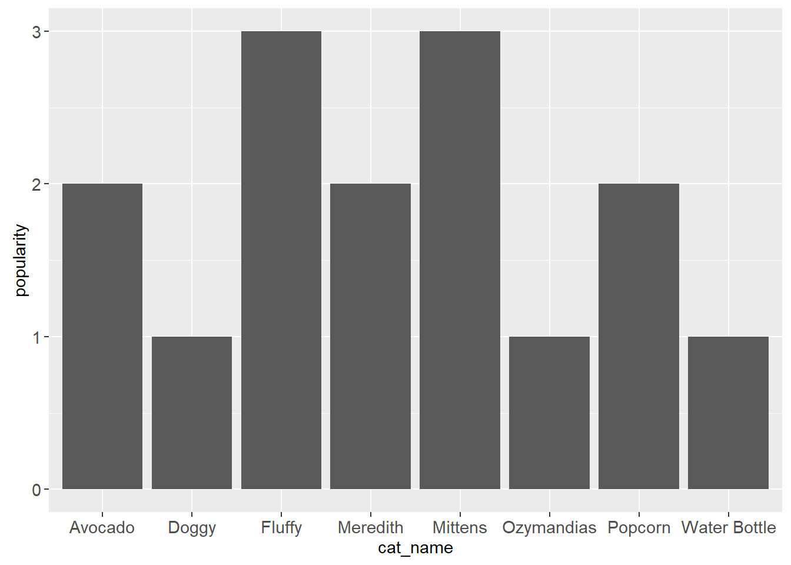

library(animint2)
library(ggplot2)animint2 GSOC Application
Sibling Rivalry
The second part of the easy test asks me to
Show an example of an error that you see when animint2 is loaded/attached at the same time as standard ggplot2.
There’s no conflict with just loading the packages:
But R throws up an error message when you run code that uses that syntax. As a quick example, I’ll load up a toy dataset and try to generate a bar chart.
cat_pop <- read_csv("meow.csv",
show_col_types = FALSE)cat_pop <- read_csv("meow.csv")cat_bar <- ggplot(data = cat_pop,
mapping = aes(cat_name, popularity)) +
geom_bar(stat = "identity", color = purple)
cat_barWhat happens?
Warning: Incompatible methods ("+.gganimint", "+.gg") for "+"In other words, animint2 and ggplot2 don’t get along because their syntaxes overlap. Unloading or uninstalling one or the other gets rid of the problem and finally gives us our very important kitty bar chart.
